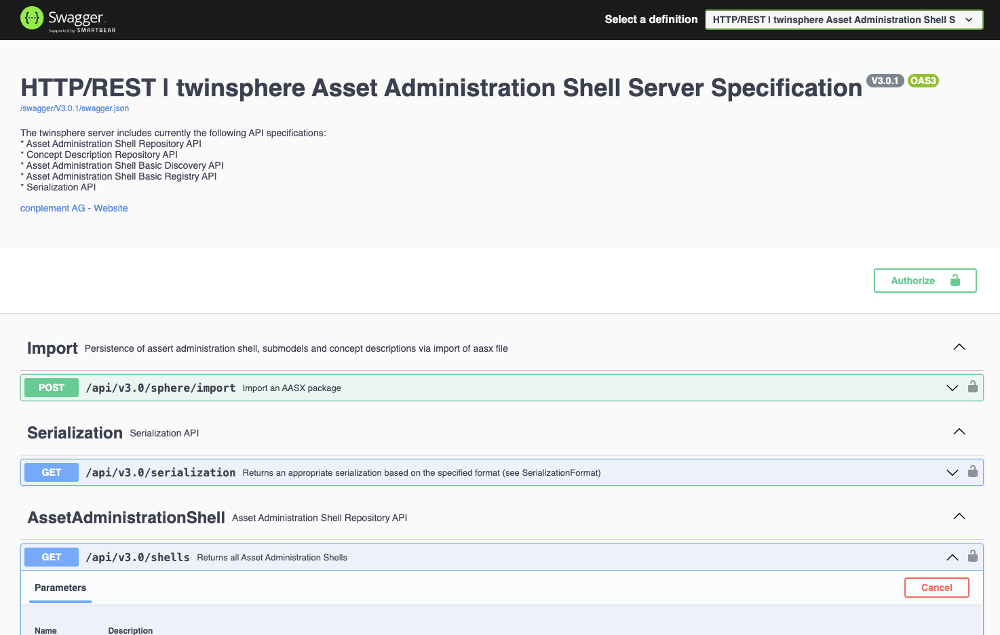

Authentication
Base of identity management in twinsphere are the OAuth2 & OpenID Connect standards. Identities are stored and managed via our twinsphere ID identity management service or your own identity provider service. Configuration of own identity provider can be found in the part about identity federation.
In the most basic terms, every request to our API expects an Authorization: Bearer ******* HTTP header. This header
should deliver a proper JWT signed token which you can get from our twinsphere ID token endpoint. The "flow" of
getting such a token is different for each usage scenario.
Machine authentication
Machine authentication described here is using twinsphere ID as the identity provider. If you setup identity federation you can configure similar flows in your own identity provider.
Accessing our APIs from machine clients (and for testing purposes) is supported using OAuth2 Client Credentials grant.
First, you need to request a set of credentials from our support team which can be used to issue tokens from the twinsphere ID service. You will receive info similar to:
Token URI: https://twinsphere.ciamlogin.com/.../oauth2/v2.0/token
Client ID: 2c84bd-...-a437382
Client Secret: z~n8...Zn
Grant type: client_credentials
Scope: api://twinsphere-server-...-api/.default
Both client ID and client secret are confidential and should be kept secret!
Testing the tokens
Simplest way to receive a token using the credentials above would be to simply perform a cURL request:
curl --location --request POST 'https://twinsphere.ciamlogin.com/.../oauth2/v2.0/token' \
--form 'grant_type="client_credentials"' \
--form 'client_id="2c84bd-...-a437382"' \
--form 'client_secret="z~n8...Zn"' \
--form 'scope="api://twinsphere-server-...-api/.default"'
Response will be similar to:
{
"token_type":"Bearer",
"expires_in":3599,
"ext_expires_in":3599,
"access_token":"eyJ0e...A"
}
The access_token field is the token you need to provide as an authorization header to every twinsphere API request,
formatted as Authorization: Bearer eyJ0e...A.
Integration into your services
While cURL might be nice for testing purposes, in your real services you will need to use a HTTP or auth library you have available in the programming language that you are using. Make sure to properly cache the tokens and not request a new token with each twinsphere API request. Many standard libraries provide you this functionality out of the box.
Using the twinsphere Swagger UI
Swagger UI interactive login flow is only supported with the usage of twinsphere ID identity
The Swagger UI provides you with the Authorize button which can be used to set the authentication token for each request. You can then either set the token manually, or sign in using Twinsphere ID interactive login flow.

Identity provider federation
For tighter integration in your authentication and authorization systems, twinsphere supports adding external identity provider configuration onto the platform.
You identity provider configuration will be added as an additional configuration, it will not completely replace the usage of twinsphere ID which is still required for internal purposes!
Supported authentication providers for twinsphere are:
Microsoft Entra ID OAuth2 federation
The Entra ID (former known as Azure AD) integration allows you to use a Microsoft Entra ID tenant as an identity provider for twinsphere. Besides allowing your own users to log in, you can also use Entra ID application roles to assign users and groups to twinsphere roles from your own Microsoft Entra ID portal. You can also connect your Entra ID applications and fully integrate twinsphere into your ecosystem.
In general, you need to create two Azure app registrations. One for the API service and one for the viewer, which acts as client for the API. If you don't use the twinsphere viewer, you can skip the viewer configuration section.
Prerequisites
The following steps require you to sign in as a user that is authorized to consent on behalf of the organization. For this, a user with the following roles is needed:
Privileged Role Administrator
Cloud Application Administrator or Application Administrator
- Log in to your Microsoft Entra admin center ⧉
- If you have access to more than one tenant, select your account in the upper right. Set your session to the Entra ID tenant you wish to use.
App registration for the twinsphere API
- Under Identity > Applications in the side menu, click App registrations > New Registration. Enter a descriptive name e.g. twinsphere-api-app
- As Supported account types let the default setting Accounts in this organizational directory only.
- Click Register.
- Note the Application ID.
- Click on Manifest and in the Tab Microsoft Graph App Manifest change the property
requestedAccessTokenVersion in the json (under
api) editor to 2 and hit the Save button. - Navigate to Overview in the created app registration and click on Endpoints in top of the menu.
- Note the Authority URL (Accounts in this organizational directory only) URI
-
Define the required application roles (under App roles).
Display name Value Description Allowed member types Reader reader Read data Both (Users / Groups + Applications) Contributor contributor Write data Both (Users / Groups + Applications) Make sure the values are typed exactly as above (lowercase!).
-
Click Expose and API under Manage section.
- Click Add a scope.
- Leave the Application ID URI as it is, should be a value like "api://
<application id>" and click Save and continue. - In the next windows set the following values:
- Set Scope name to "api_access"
- Set Who can consent? to "Admin and users"
- Set Admin consent display name to "twinsphere API access"
- Set Admin consent description to "Allow the application to access the twinsphere API on behalf of the
- signed-in user."
- Set User consent display name to "twinsphere API access"
- Set User consent description to "Allow the application to access the twinsphere API on your behalf."
- Click Add scope
- Under Entra ID > Identity > Applications in the side menu, click Enterprise applications
- Search for your application (e.g. twinsphere-api-app) and open it.
- Click Users and groups.
- Click Add user/group to add users or groups to the twinsphere roles.
Please provide the noted information to the twinsphere support team to change and update your tenant configuration:
- Application ID
- Authority URL (Accounts in this organizational directory only)
Create and configure app registration for viewer client
- Under Identity > Applications in the side menu, click App registrations > New Registration. Enter a descriptive name e.g. twinsphere-viewer-client-app
- As Supported account types let the default setting Accounts in this organizational directory only.
- Under Redirect URI, select the platform Web.
- Add the following redirect URL:
https://viewer.<friendly-tenant-name|tenant-tag>.<cloud|dedicated>.twinsphere.io/signin-oidc-entra-id- Replace
<friendly-tenant-name|tenant-tag>with your friendly tenant name, if you use one or use your tenant-tag. - Replace
<cloud|dedicated>with your corresponding type. It's basically the base URL of the viewer app you use with a route postfix/signin-oidc-entra-id. - If you don't know which URL to add here, please ask our support team
- Then click Register. The app's Overview page opens.
- Note the Application ID.
- Click on Manifest and in the Tab Microsoft Graph App Manifest change the property
requestedAccessTokenVersion in the json (under
api) editor to 2 and hit the Save button. -
Click on Certificates & secrets in the side menu, then add a new entry under Client secrets with the following configuration.
- Description: twinsphere viewer client OAuth
- Expires: Select an expiration period of 365 days
-
Click Add then copy and note the secret value. This is the OAuth client secret.
The secret is needed, because the viewer acts as confidential OAuth client (web app which authenticates) unlike a public client (e.g. mobile client) which could not store a secret securely.
-
Click on API permissions in the side menu, then click Add a permission.
- In the opened window click APIs my organization uses and select the API application you previously created for the twinsphere API.
- Click on Delegated permissions and select the api_access permission.
- Click on top on Application permissions and select all listed permissions.
- Click Add permissions
- In the top of the API permissions list click Grant admin consent for
<your tenant> - Under Identity > Applications in the side menu, click App registrations
- Search and select the twinsphere API application.
- Click Expose and API under Manage section.
- Click Add a client application
- Set Client ID to the ID of the viewer app registration and select the Authorized scopes checkbox.
- Click Add application.
Please provide the noted information to the twinsphere support team to change and update your tenant configuration:
- Application ID
- Client Secret and it's expiration date, in order to plan an update in a timely manner